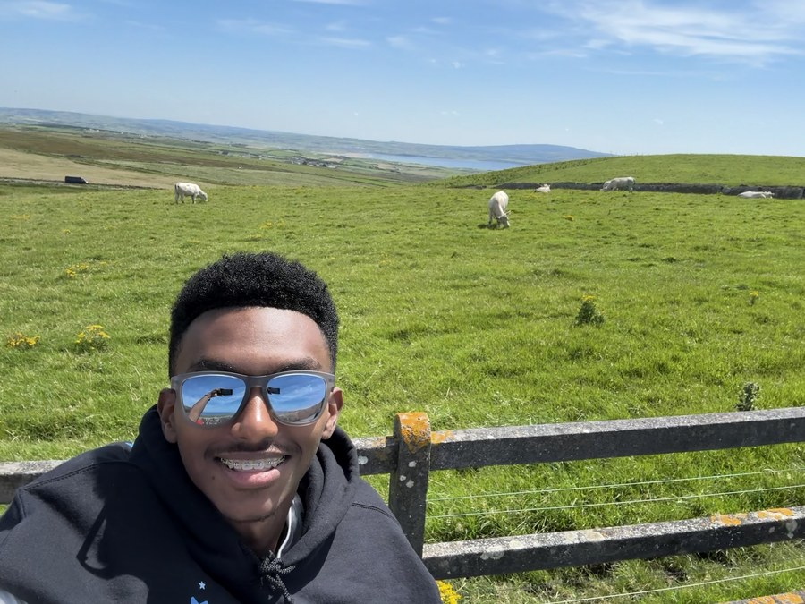

Originally from Denver. Currently in Houston. That's Ireland in the background, which tells you everything you need to know.
I'm a student at Rice University studying Computer Science and Statistics, interested in data, systems, and putting them to use where they actually produce something.
I think markets are one of the world's most chaotic dataset. Not because they're unpredictable, but because there are too many confounding variables. If you could isolate the microeconomic signals that actually move things, you'd have something. That's the puzzle worth coming back to.
I like problems that feel impossible, because you're not sure you'll figure it out until suddenly you do.